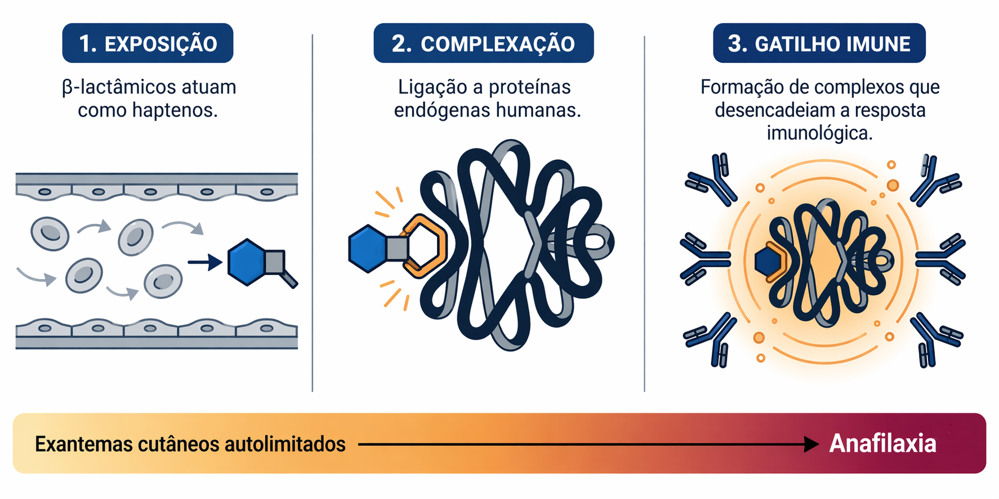

Inibidores da síntese da parede celular
Os antibacterianos que inibem a síntese da parede celular apresentam, em geral, ampla margem terapêutica. O principal alvo estrutural dessa classe, o peptidoglicano, não possui equivalente direto nas células humanas, o que explica a elevada seletividade farmacológica dos β-lactâmicos e de outros agentes com mecanismo semelhante 2.
Entretanto, os efeitos adversos mais relevantes dessa classe não resultam de toxicidade estrutural direta sobre tecidos humanos. Na maioria das vezes, eles decorrem da interação entre o fármaco e o sistema imunológico do hospedeiro.

Os β-lactâmicos podem atuar como haptenos, ligando-se a proteínas humanas e formando complexos capazes de desencadear resposta imunológica. As manifestações clínicas variam amplamente, desde exantemas cutâneos autolimitados até reações imediatas graves, como anafilaxia. O tipo de manifestação depende do mecanismo imunológico envolvido e do histórico de exposição prévia ao medicamento 2,3.
Um aspecto particularmente relevante na prática clínica é a rotulagem de alergia à penicilina. Estudos demonstram que a maioria dos pacientes que apresentam esse registro em prontuário não possui hipersensibilidade confirmada quando submetida a investigação adequada. Esse rótulo impreciso frequentemente leva à exclusão desnecessária de β-lactâmicos de primeira linha e à substituição por classes alternativas de espectro mais amplo 11.
A substituição injustificada tem implicações que ultrapassam o risco individual. O uso ampliado de agentes alternativos associa-se a maior pressão seletiva sobre a microbiota, aumento da incidência de infecção por Clostridioides difficile e maior circulação de microrganismos multirresistentes em ambientes hospitalares 4,5,11.
Além das reações imunomediadas, alguns β-lactâmicos podem produzir alterações hematológicas reversíveis durante tratamentos prolongados ou em exposições cumulativas elevadas. Esses eventos não resultam da inibição da parede celular humana, mas de efeitos sistêmicos indiretos relacionados à interação farmacológica com o organismo 2,3.
Do ponto de vista ecológico, a utilização extensa de cefalosporinas de amplo espectro também pode contribuir para desequilíbrios na microbiota intestinal e para a seleção de patógenos oportunistas 4,5.
Assim, a análise de segurança dessa classe exige considerar três dimensões principais: a possibilidade de hipersensibilidade verdadeira, o risco de rotulagem diagnóstica imprecisa e o impacto ecológico decorrente da substituição terapêutica inadequada. Embora o mecanismo de ação seja altamente seletivo para bactérias, os eventos adversos emergem principalmente da resposta imunológica e das consequências do padrão de uso.